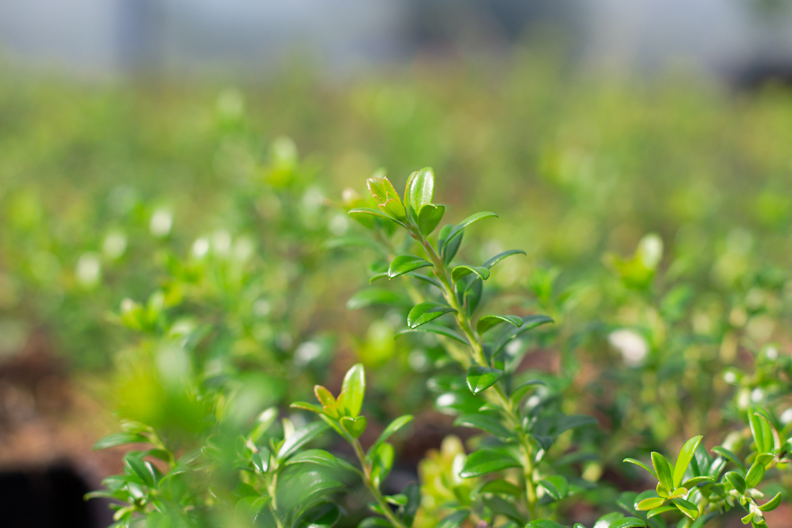

Luonnonmarjat
Luonnonmarjat
Peuraniemen Taimitarhalla tuotetaan laajaa valikoimaa eri luonnonmarjojen taimia, joilla pystyy helposti piristämään esimerkiksi kotipihansa tai viherrakennuskohteen marjatarjontaa. Lakoissa, mesimarjassa ja puolukassa on saatavilla lajiketaimia ja muut luonnonmarjat ovat Pohjoisen Suomen luonnonkantoja.
Tuotteet toimitetaan pääasiassa 9x9x9cm kanttiruukussa ja tilauksesta myös eri kokoisissa ruukuissa tai esimerkiksi kennossa. Onpa esimerkiksi lakkaa ja mesimarjaa nähty amppeleissakin.
Lakka
Rubus chamaemorusLajikkeet
- Nyby (kaksineuvoinen, kotimainen lajike)
Mesimarja
Rubus arcticusLajikkeet
- Pima
- Susanna
- Elpee
- Ilomantsin kanta
Puolukka
Vaccinium vitis-idaeaLajikkeet
- Otson karkki
- Luonnonkanta
Pohjavariksenmarja
Empetrum nigrum s. hermaphroditumLajikkeet
- Luonnonkanta
Juolukka
Vaccinium uliginosumLajikkeet
- Luonnonkanta
Mustikka
Vaccinium myrtillusLajikkeet
- Luonnonkanta
Sianpuolukka
Arctostaphylos uva-ursiLajikkeet
- Luonnonkanta